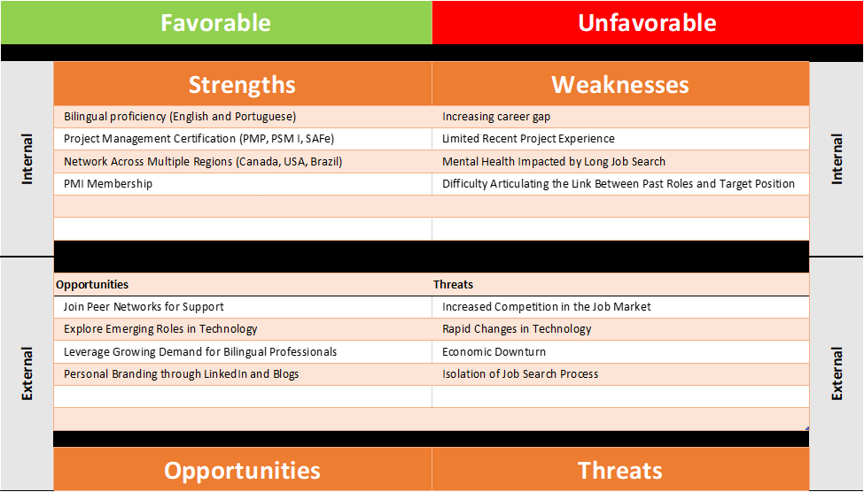
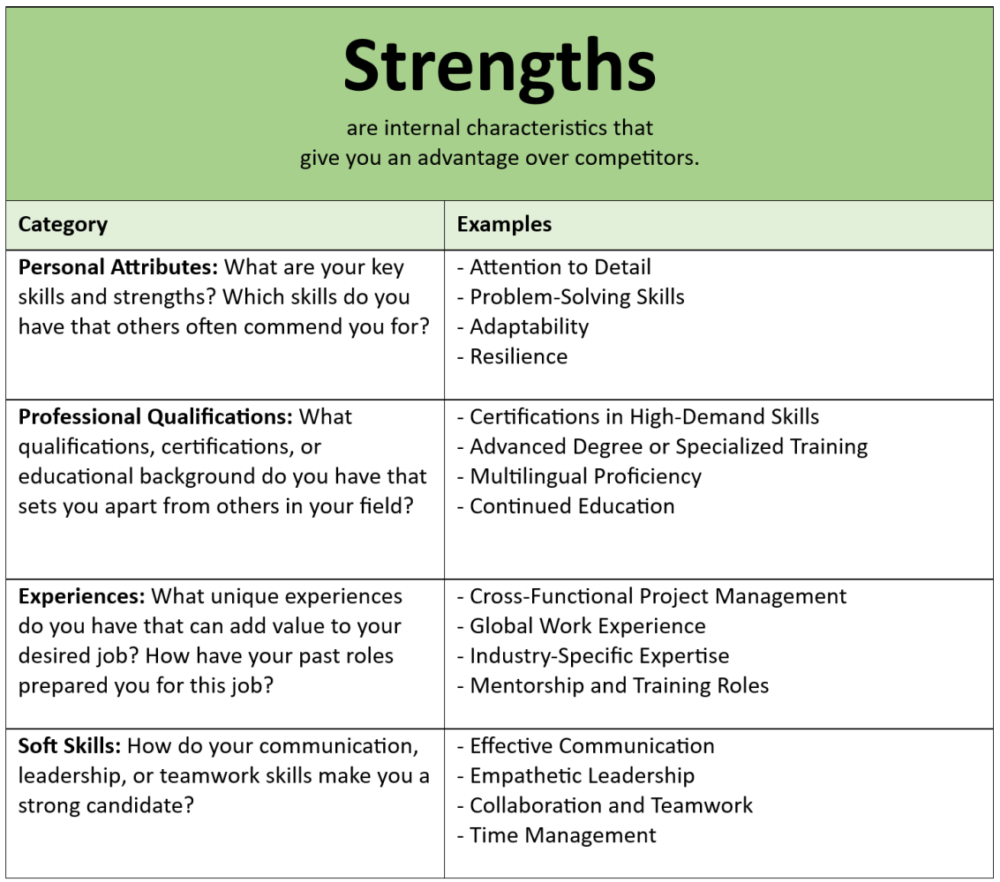
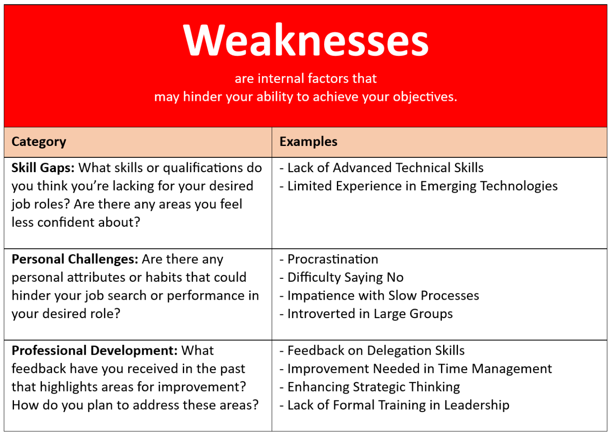
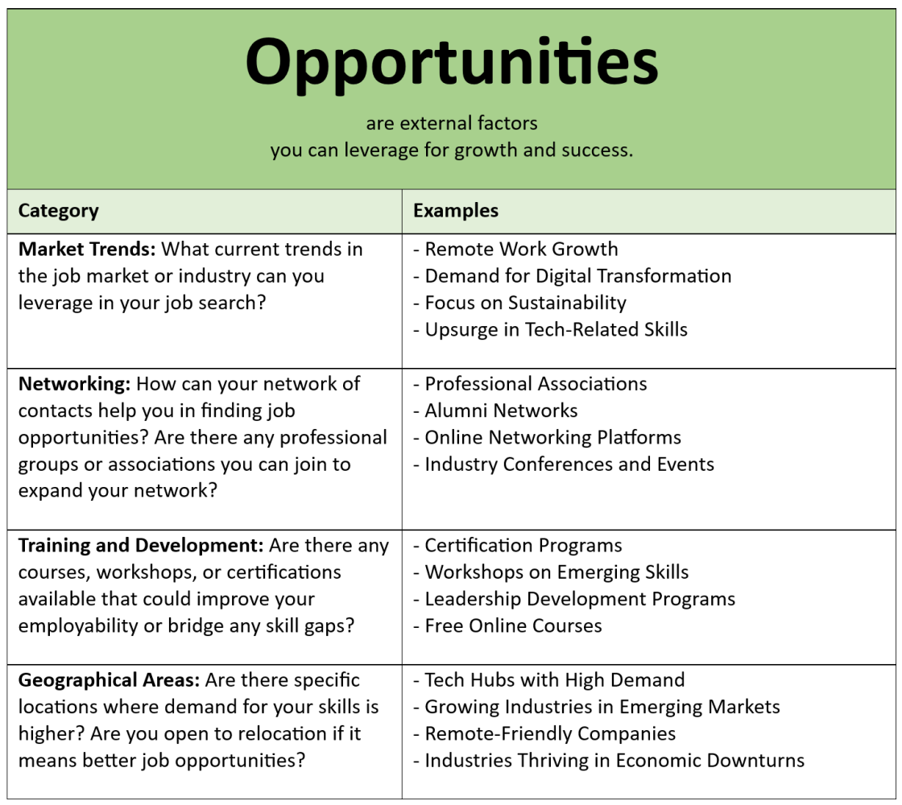
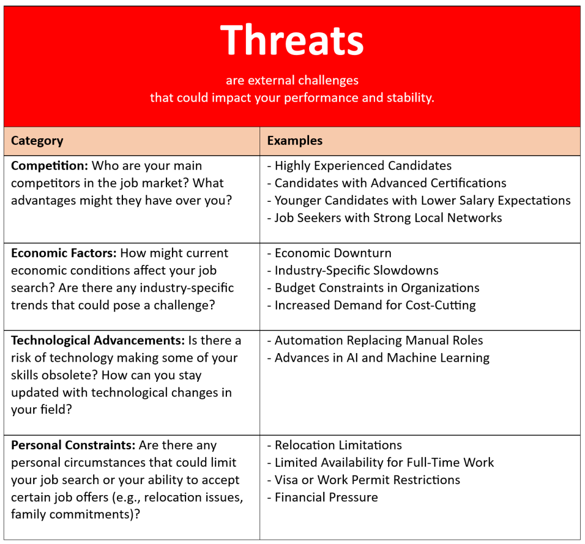
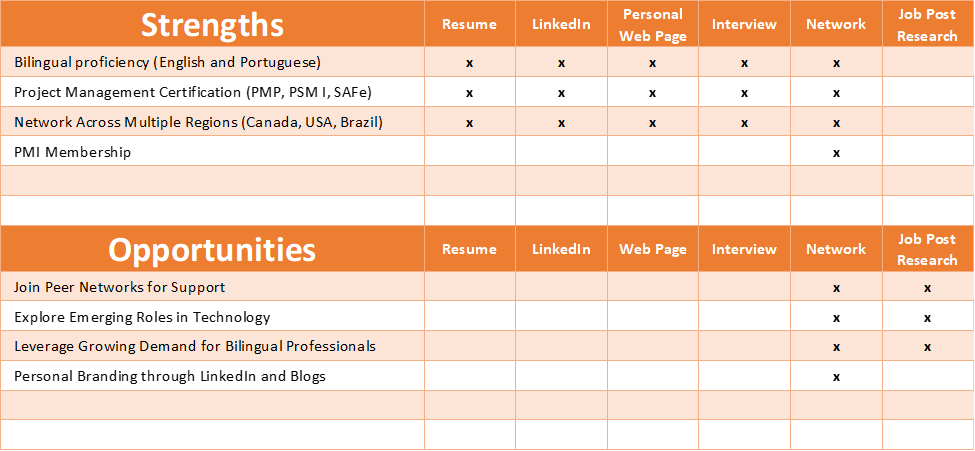
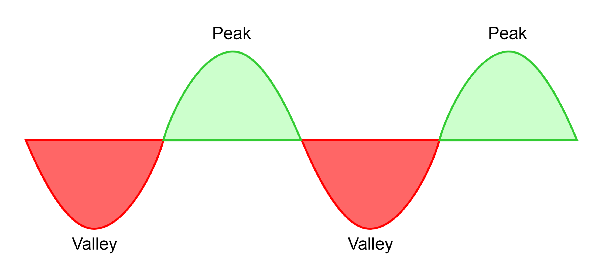

Imagine you're selling gym memberships. To be effective, you need a solid understanding of membership tiers, including amenities (such as classes, personal training, or pool access), promotional discounts, and knowledge of competing gyms to highlight your unique strengths. The more familiar you are with your offering, competitors' options, and what each customer is looking for, the better your chances of successfully closing a sale. While gym memberships are often purchased with little push, true sales champions are prepared to win over even the most resistant leads.
In the previous article, Project Managing Your Job Search: Tools, Tips, and Inspiration, I focused on inspiring and supporting you to set clear, achievable goals. This article will guide you in progressively building your understanding of available resources and the current market landscape and in developing a project backlog to achieve your specific objective.
Absolutely, you should aim to be the sales champion for the service you're offering — yourself. Let me introduce you to the SWOT analysis, a powerful tool for strategic planning essential in any organization and how to apply for your job search efficiently. Remember, you are your own organization, offering one of the most reliable services the job market can find. Dive deep into identifying your strengths and weaknesses while mapping market opportunities and threats to excel. It will empower you to handle sales arguments and objections like a true champion.
SWOT Analysis
SWOT stands for Strengths, Weaknesses, Opportunities, and Threats. This strategic planning technique helps you identify and evaluate both your internal capabilities and external environment to reach your target goals.
- Strengths: Internal qualities or skills that give you an advantage in your job search. These are the unique abilities, experiences, or characteristics that make you a valuable candidate, such as specific expertise, professional qualifications, or standout personal attributes.
- Weaknesses: Internal factors that might limit your effectiveness in achieving your job search goals. These areas for improvement or skill gaps could impact your performance or competitiveness, such as a lack of experience in a particular field or areas where you feel less confident.
- Opportunities: External factors in the job market or industry that you can leverage to enhance your chances of success. Opportunities might include growing demand for specific skills, networking possibilities, or trends that align with your expertise.
- Threats: External challenges that could affect your job search negatively. These could be factors beyond your control, like high competition, economic downturns, or industry-specific changes that might impact job availability or requirements.

Inspiring your SWOT analysis
To spark ideas for your SWOT analysis, I've organized each of the four elements into helpful categories. These categories are not exhaustive — you're encouraged to explore further and define additional aspects that apply to your unique situation.




Practical tips to guide you through a personal SWOT analysis
- Focus on Specific Job Goal: Tailor your SWOT analysis to your target role or industry. This targeted approach will make the analysis more relevant and help you pinpoint the most impactful strengths, weaknesses, opportunities, and threats.
- Be Honest and Objective: Approach the analysis with a clear, unbiased mindset. Recognize your genuine strengths and areas for improvement without exaggeration.
- Gather Feedback from Others: Seek input from trusted friends, colleagues, or mentors. Others can often provide valuable insights you might overlook.
- Highlight Transferable Skills: Identify skills gained in past roles that can benefit your target job, such as communication, project management, or leadership.
- Leverage It to Build Your Personal Brand: Use insights from your SWOT to shape your personal brand on platforms like LinkedIn, showcasing what makes you unique in the job market.
- Identify Areas for Improvement: Use your weaknesses and threats to create a development plan, whether through upskilling, certifications, or soft skill enhancement.
- Consider Market and Industry Trends: Stay informed on industry trends to spot opportunities and address potential threats, helping you stay competitive in your field.
Remember, a SWOT analysis is not a one-time exercise; just as in project management, a job search is an iterative process. By regularly revisiting and refining your SWOT analysis and backlog, you can adapt to new opportunities, overcome emerging challenges, and maintain a clear perspective on your progress. As you apply for jobs, gain insights, or acquire new skills, update your SWOT to reflect your evolving strengths, opportunities, and goals. This iterative approach keeps your job search agile, helping you stay aligned with your objectives and better manage the process. In an upcoming article, we'll discuss a pivotal moment in your job search when revisiting your SWOT analysis can make a critical difference.
Use your strengths and opportunities to develop a personal brand
Building on the concept of being a sales champion, once you've identified your strengths, the next step is to map out how to leverage them strategically. Each strength can become a unique selling point across your "sales channels." Likewise, each opportunity can serve as a guide for your job search and networking efforts.
The table below provides an example of how to align your strengths and opportunities with different channels.

Strengths and opportunities action backlog items
As you continue gathering data, you're positioning yourself as a "sales champion" and building your project backlog. From my experience, action items stemming from these two sections are often straightforward, quick to implement, and require minimal cost. Your backlog for this area might look like this:
- Job-Seeking Tools – Update Resume, LinkedIn, and Personal Webpage with SWOT strengths
- Network – Reach out to contacts across Canada, the USA, and Brazil
- Network – Engage with opportunities within the local PMI chapter
- Network – Consistently post and write articles on LinkedIn
- Network – Join Peer Networks for Support
- Job Post Research – Update job portal alerts with SWOT opportunities
In an upcoming article, I'll dive into the specifics of "sales channels" (resume, LinkedIn, and personal website).
Turning weaknesses into strengths through skill development
This area may require most of your time and resources. Often, it will take discipline more than motivation, sometimes even financial investment when you have limited income. You'll need to stretch your patience, and in some cases, you might not be able to completely overcome a weakness due to constraints in resources, time, or willpower. In these situations, consider finding a workaround or focusing on roles that don't heavily rely on that particular skill.
Let's explore some common areas of weakness:
- Limited Network: A strong network is one of a professional's most valuable assets, second only to knowledge and experience (I remind myself of this all the time 😊). You've probably heard of many professionals landing new roles through referrals from former coworkers, classmates, or friends. This has happened to me as well. Building a solid network isn't necessarily difficult, but it does require intentionality and openness about your needs. My network is built around the Project Management community, the Brazilian community across Canada — especially in Greater Vancouver — as well as my hockey groups and church. When I activated these networks, I saw the power of a supportive community working alongside me.
- Certifications: While often desirable, certifications aren't always essential, so weigh the cost against the potential benefit. For example, despite years of experience with Scrum, I never pursued a Scrum Master certification due to time constraints (a trap I set for myself). During one of my job search periods, I spent two afternoons reviewing concepts, paid USD 200, and became a certified Scrum Master. Other certifications, however — like Change Management — require both costly training and an expensive exam, and preparation for these can take weeks or even months. Before committing to a certification during a job search, consider its value carefully. Once you secure a new role, dedicate time and resources to pursue additional certifications.
- Language: Proficiency in the local language is crucial for immigrants living in a country where the primary language differs from theirs — this is also true for me. While my English communication skills are strong enough for both professional and personal interactions (I'm the type to strike up conversations with neighbours in the elevator!), I'm aware of a performance gap between my Portuguese and English. Another critical point is "use it or lose it." The best environments to maintain and improve a second language are often at work or school. If your spouse shares your native language, it's natural to speak it at home, and you might find that most of your friends also speak it rather than the local language. That's why it's important to intentionally maintain your second language skills during your job search. I take private English classes, participate in Toastmasters, volunteer at PMI local chapter and English conversation groups, and chat with neighbours in the elevator 😊.
- Continuous Learning: Staying updated is essential throughout any professional career; however, it adds significance to an extended job search. Pursuing an MBA or a professional certificate or attending webinars related to your field not only adds new skills or sharpens existing ones but also keeps you connected to your profession. It provides a refreshing break from the often frustrating process of job applications. Many high-quality, low-cost, or even free courses are available from reputable institutions. Personally, I'm enrolled in the Google Cybersecurity Certificate program on Coursera and participate in PMI webinars whenever possible.
- Job Application Productivity: Focusing on quality over quantity is essential during a long job search. The current job market downturn has intensified competition, with many highly qualified professionals competing for positions. As a result, employers are often selecting candidates who closely match their requirements. This means our applications must be as precise as possible, requiring time and often testing our patience. In my experience, crafting a well-tailored application can take anywhere from 40 minutes to 4 hours, depending on the detail level in the job description. Investing time in researching tools and techniques that can boost both your productivity and the quality of your applications is worthwhile. While this isn't exactly a weakness, it's likely to be one of your first lessons learned. As time passes in a lengthy job search, the personal cost of tailoring each resume can feel increasingly burdensome, so I'm bringing this up early to encourage you to address it from the outset.
Threats will require some effort and mainly attention
Some threats will require careful consideration and dedicated effort, while others primarily serve as indicators of where to focus (or avoid) our efforts. For instance, while threat categories like Competitors and Technological Advancement may inspire you to enhance your skills to stay competitive, others like Economic Factors and certain Personal Constraints are predominantly signals to steer clear, allowing you to concentrate on areas where you have a genuine chance of success. Let's look at a few examples:
Competitors – Today's job market is filled with highly qualified professionals. Although you can't directly control this external factor, you can address it by emphasizing your unique strengths, focusing on roles aligned with your core expertise, and proactively working on any areas of weakness.
Technological Advancement – Like competition, technological shifts are an external factor that can guide your skill development. Areas such as Artificial Intelligence (AI) and Cybersecurity are poised for growth, making them valuable focus areas for ongoing skill sharpening.
Economic Factors – These can help you identify potential dead ends, like companies with recent layoffs that might still post openings but are unlikely to hire externally. A recent Forbes article suggests that some positions may not truly be available. If a company with layoffs is your dream employer, you might still apply but proceed with realistic expectations.
Personal Constraints – While some personal constraints, like relocation or visa requirements, can sometimes be overcome, others may clash with your core values and could be non-negotiable. If you're deeply opposed to industries or products you don't believe in, such as those involved in warfare or substances you disapprove of, it's unlikely you'll find fulfillment working there. Remember, money can be a powerful tool but shouldn't control your principles.
How comprehensive and specific should this plan be?
Avoid overcomplicating your plan. While you could include elements like cost, implementation time, priority, detailed task breakdowns, and deadlines — which can be helpful — it's best to keep the plan as simple, concise, and practical as possible. Focus only on aspects that will genuinely add value to your job search.
The value of a SWOT backlog: why it's worth the effort
Building this backlog does require time and effort. You'll need to dedicate a few hours to develop your SWOT analysis, but I believe it's a worthwhile investment. Here are some key benefits:
- Enhanced Self-Awareness – You'll gain a deeper understanding of yourself and the surrounding job market, all through a structured approach.
- Reduced Uncertainty – Mapping out this scenario helps lower the uncertainty in your job search.
- A Career Asset – Think of this analysis as a valuable career asset. You can update it anytime and apply it toward other goals, like a career change.
- Insight into Your Zone of Genius – Your SWOT analysis can serve as a foundational step to identifying your Zone of Genius, which I'll cover in a future article.
- Productive Procrastination Tool – When you feel like procrastinating, you can turn to your SWOT backlog to channel that energy into something constructive.
- Accountability Support – If motivation or discipline wavers during a prolonged search, consider partnering with an accountability buddy. Share your backlog with them and empower them to track your progress.
During a long job search, you'll experience a range of emotions. You'll sometimes be at the peak of motivation, feeling capable of achieving anything. Sometimes, you might feel demotivated, weighed down by self-doubt and even imposter syndrome. The illustration below shows this cycle. Make your plans when you're in the "green" zone. When you find yourself in the "red" zone, simply follow the plan you created during your motivated moments. This approach can help you stay productive and, hopefully, shorten those challenging periods.

I've also provided a ready-to-use SWOT analysis template in a spreadsheet to support your efforts.
Wrapping up
As you embark on your job search journey, take the first step by conducting your own SWOT analysis. Reflect honestly on your strengths and areas for growth, map out opportunities, and consider potential challenges. Use this analysis to create a project backlog with clear, actionable steps that guide your job search efforts and keep you focused.
Remember, this is just the beginning. Like any successful project, your job search benefits from regular review and adjustment. Revisit your SWOT analysis as you progress, updating it with new insights, skills, and strategies. By doing so, you're not just managing your job search — you're turning it into a structured, empowering process that brings you closer to finding the proper role.
Stay tuned for the following article, where we'll dive deeper into leveraging your personal brand through tools like your resume, LinkedIn profile, and personal website. Together, let's build a job search strategy that reflects who you are and showcases the unique value you bring to potential employers.
Wishing you success,
Julio Gulias